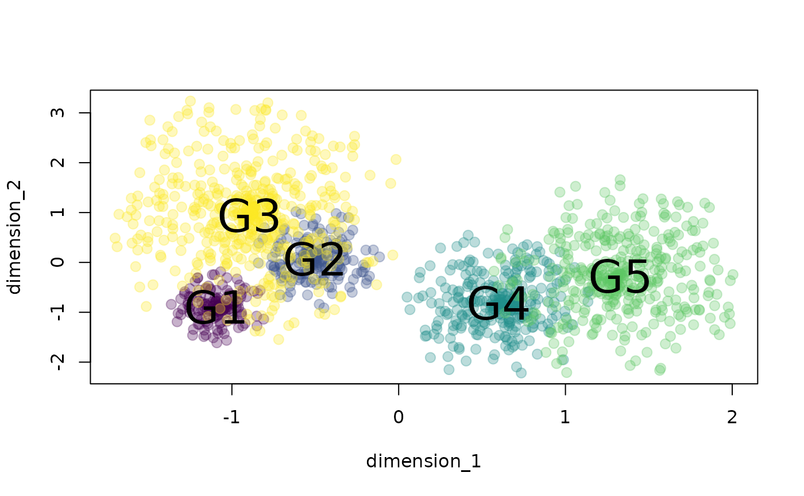

space_size
Arguments
- formula
an object of class "formula" (or one that can be coerced to that class).Must follow the form
group ~ dim1 + dim2where dim1 and dim2 are the dimensions of the phenotype space andgrouprefers to the group labels.- data
Data frame containing columns for the dimensions of the phenotypic space (numeric) and a categorical or factor column with group labels.
- cores
Numeric vector of length 1. Controls whether parallel computing is applied by specifying the number of cores to be used. Default is 1 (i.e. no parallel computing).
- method
Character vector of length 1. Controls the method to be used for quantifying space size. Three metrics are available:
mcp: minimum convex polygon area using the functionmcp. The minimum sample size (per group) must be 2 observations.density: kernel density area using the functionkernelUD. The minimum sample size (per group) must be 6 observations.mst: minimum spanning tree using the functionspantree. The minimum sample size (per group) must be 2 observations. This method is expected to be more robust to the influence of outliers. . Note that mst is not a actually measuring area but distance between observations. However, it still help to quantify the size of the sub-region in trait space.
- pb
Logical argument to control if progress bar is shown. Default is
TRUE.- outliers
Numeric vector of length 1. A value between 0 and 1 controlling the proportion of outlier observations to be excluded. Outliers are determined as those farthest away from the sub-space centroid.
- ...
Additional arguments to be passed to
kernelUDfor kernel density estimation (whenmethod = 'density'.
References
Araya-Salas, M, & K. Odom. 2022, PhenotypeSpace: an R package to quantify and compare phenotypic trait spaces R package version 0.1.0.
Author
Marcelo Araya-Salas marcelo.araya@ucr.ac.cr)
Examples
{
# load data
data("example_space")
# plot data
xs <- tapply(example_space$dimension_1, example_space$group, mean)
ys <- tapply(example_space$dimension_2, example_space$group, mean)
plot(example_space[, c("dimension_1", "dimension_2")],
col = example_space$color, pch = 20, cex = 1.8)
text(xs, ys, labels = names(xs), cex = 2.5)
# MCP spaces
space_size(
formula = group ~ dimension_1 + dimension_2,
data = example_space,
method = "mcp")
# MST
space_size(
formula = group ~ dimension_1 + dimension_2,
data = example_space,
method = "mst")
}

#> group n size
#> 1 G1 150 6.062202
#> 2 G2 200 9.179167
#> 3 G3 500 34.469612
#> 4 G4 300 16.668042
#> 5 G5 400 26.412904